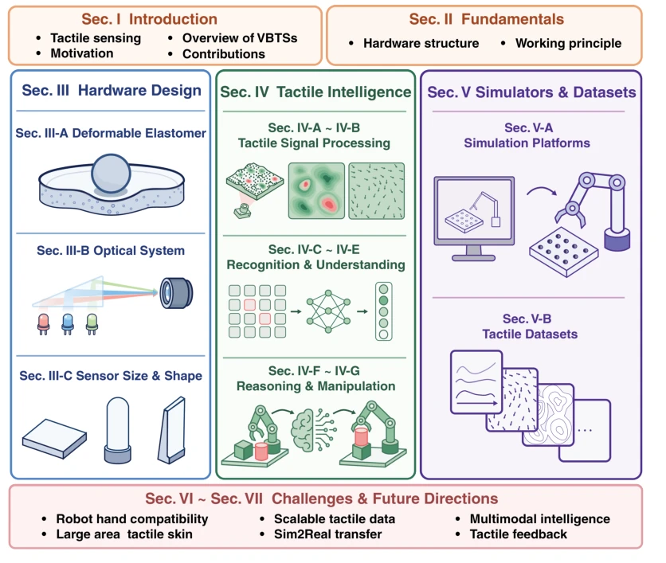
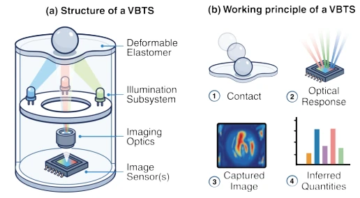
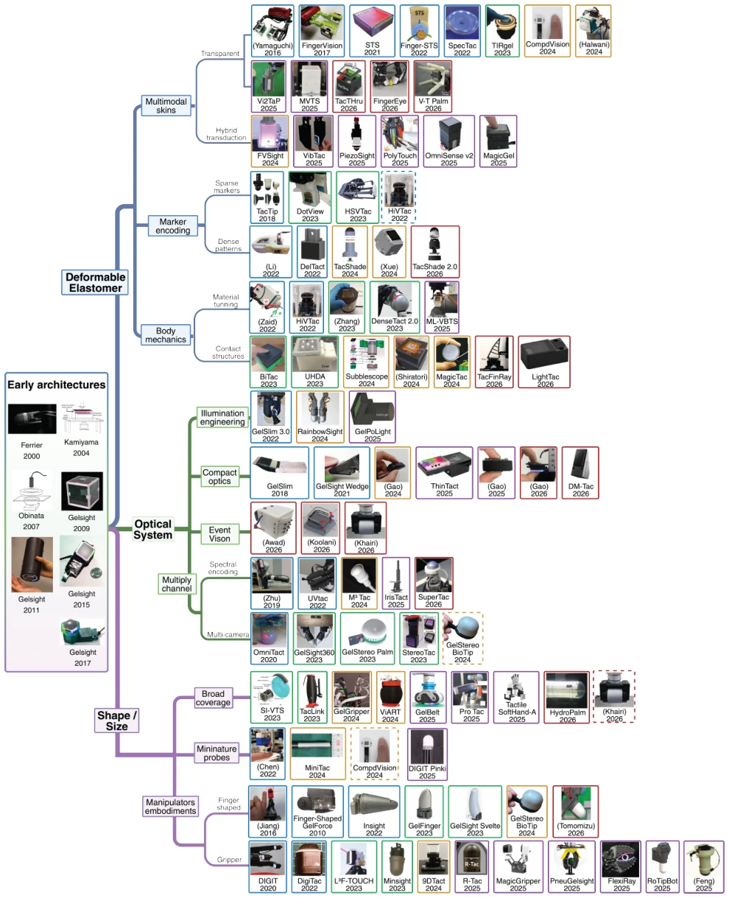
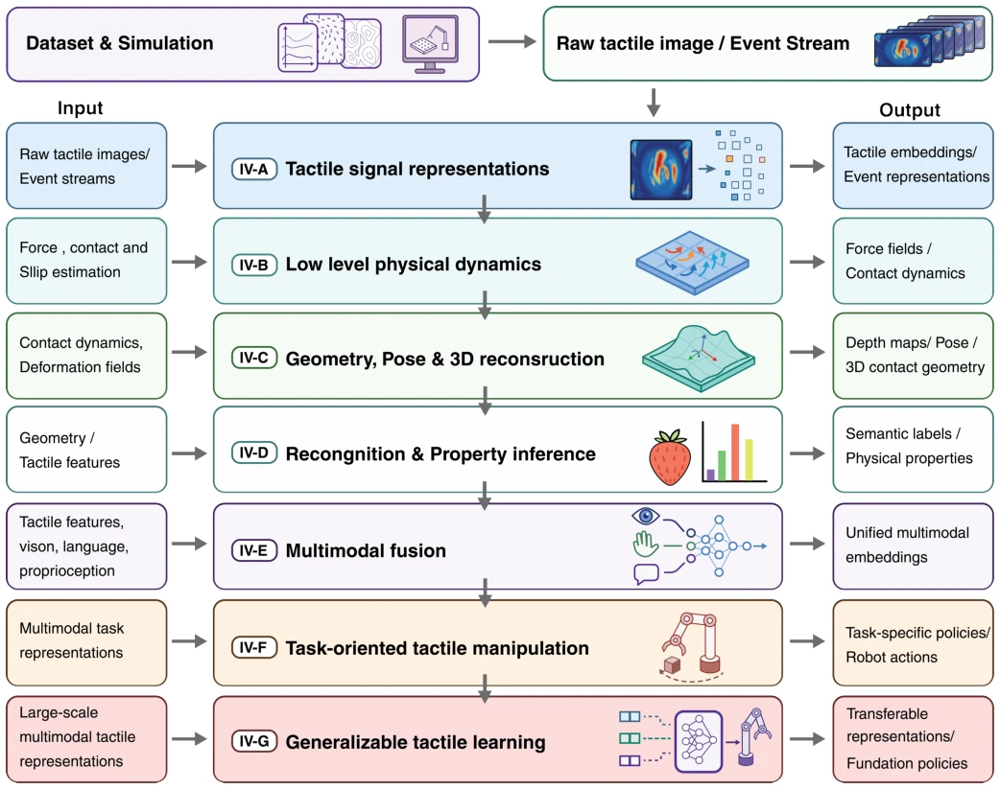
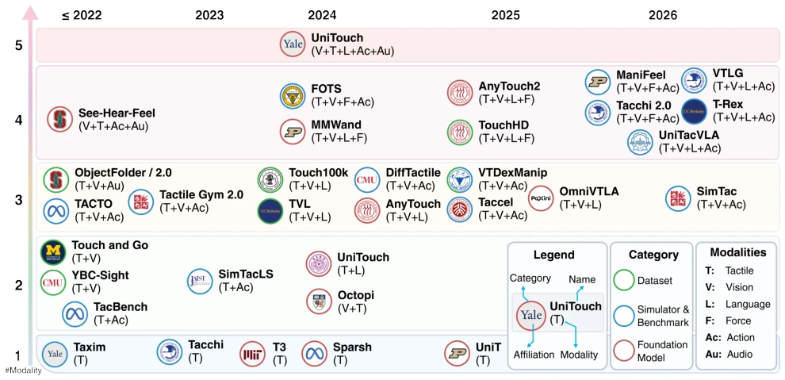

This review attempts to establish order in the chaotic field of vision-tactile integration, packaging hardware, AI, and simulation into an "integrated system". The advantage lies in clearly classifying mainstream sensors such as GelSight and DIGIT according to elastomers, dimensions, and optics, avoiding the awkwardness of previous reviews where "each party speaks their own language". The drawback is, after all, being a review, it does not propose new algorithms, merely stringing together others' work. For engineers urgently needing deployment solutions, it might feel like "the principles are understood, but specific selection still requires consulting literature oneself". However, it emphasizes that hardware design should serve learning tasks, a perspective that is quite sober, after all, sensors are not isolated components but part of an intelligent system. It reveals that tactile intelligence is not merely "seeing" images, but understanding physical contact and dynamic interaction, providing a clear roadmap for subsequent research, although efforts are still needed in unified standards.
Contact tasks are full of uncertainty, pure vision struggles to infer key variables, making tactile sensing indispensable. However, existing tactile sensing lags behind vision and language. Traditional electronic sensors (e.g., piezoresistive, capacitive) have low resolution, primarily measuring force rather than geometric texture [1]. Although Vision-Based Tactile Sensors (VBTS) can output images, hardware, learning, and simulation are often studied in isolation. Existing reviews mostly focus on single dimensions, such as hardware design or robot learning deployment, lacking the perspective of viewing tactile sensing as an embodied intelligence integrated component. This paper aims to fill this gap, emphasizing the mutual influence of physical sensing, computational representation, and task performance, promoting the evolution of tactile intelligence from "sensor" to "system". By integrating hardware classification and learning hierarchies, the authors hope to solve the current fragmentation problem of tactile perception, providing a unified perception and decision framework for complex manipulation tasks.

Fig. 1. Organizational framework of this survey.

Fig. 2. Structure and working principle of a vision-based tactile sensor. (a) A representative VBTS consists of a deformable elastomer, illumination sub- system, imaging optics, and one or more image sensors, with the illumination and imaging components forming the optical system. (b) Contact deforms the elastomer, produces an optical response, and generates tactile images from which contact-related physical quantities are inferred.
The overall framework is divided into three pillars: hardware, AI learning, and simulation data. Regarding hardware, a classification system is constructed based on elastomer interfaces, size/shape, and optical systems. Elastomer design covers multimodal skins, marker encoding, and intrinsic structure optimization; optical systems involve illumination engineering, compact optical paths, and event cameras. The AI learning part adopts a layered perspective: the bottom layer processes raw images or event streams, the middle layer infers physical dynamics (force, slip) and geometric pose, and the top layer supports multimodal fusion and task strategies. Specifically, the signal representation layer processes raw images or event streams, the physical dynamics layer infers force and slip, the geometry layer reconstructs pose, and the high layer fuses multimodal information to support strategy learning. Simulation and data serve as an extension layer, emphasizing sim-to-real transfer. Figure 3 displays hardware classification, Figure 4 depicts AI perception layers, and Figure 1 summarizes the overall organizational framework. This structured organization helps understand how different design choices affect downstream task performance. Additionally, the paper discusses the construction of tactile foundation models and large-scale datasets, aiming to address data scarcity and domain shift problems, providing scalable tactile perception capabilities for embodied intelligence.

Fig. 3. Categorical overview of representative vision-based tactile sensors, grouped by hardware design dimension and category to clarify the design choices within each. Each sensor is shown as a block containing an image, sensor name, and publication year; when no explicit sensor name is reported, the first author’s surname is given in parentheses. The color of a block’s border encodes the publication year, while the border style indicates the sensor’s role in that category: a solid border marks the category corresponding to the sensor’s main contribution, and a dashed border marks a secondary contribution. A sensor that spans several categories therefore appears once with a solid border in its primary category and again with dashed borders in its secondary categories.

Fig. 4. Hierarchical view of AI-based tactile perception and learning for VBTSs. Raw tactile images or event streams are transformed into representations for physical dynamics estimation, geometry and pose reconstruction, recognition and property inference, multimodal fusion, task-oriented manipulation, and generalizable tactile learning. The side columns indicate representative inputs and outputs at each layer.
As a review, this paper did not conduct new experiments, mainly organizing existing research datasets, simulation platforms, and benchmarks. Figure 5 displays representative resources along a timeline, covering multimodal support situations such as tactile, vision, and language. The paper reviews the experimental performance of sensors such as GelSight [16] and DIGIT, discussing their effectiveness in grasping and manipulation tasks. It focuses on analyzing the challenges of sim-to-real transfer, pointing out domain shift problems caused by hardware differences. Although there are no specific ablation studies, by comparing the applicable scenarios of different sensor architectures and learning methods, it provides evaluation benchmarks and selection references for subsequent research, clarifying the gaps in current tactile foundation models and large-scale datasets. Additionally, it discusses the potential of emerging technologies such as event cameras in dynamic tactile perception, providing direction for future experimental design.

Fig. 5. Chronological overview of representative datasets, simulation platforms and benchmarks, and foundation models in vision-based tactile sensing research. Entries are arranged by publication year along the horizontal axis, with entries from 2022 or earlier grouped under ≤2022, and by the number of supported modalities along the vertical axis. Each entry shows an affiliation logo, the resource or model name, and its supported modalities in parentheses. The circle border color encodes the category: green denotes datasets, blue denotes simulation platforms and benchmarks, and red denotes foundation models. T, V, L, F, Ac, and Au denote tactile, vision, language, force, action, and audio, respectively.